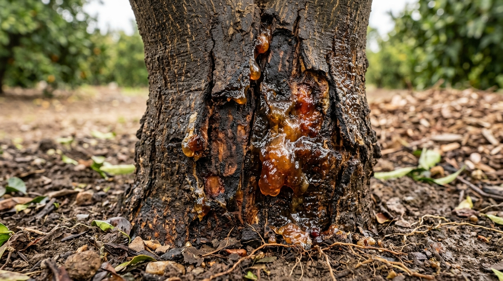
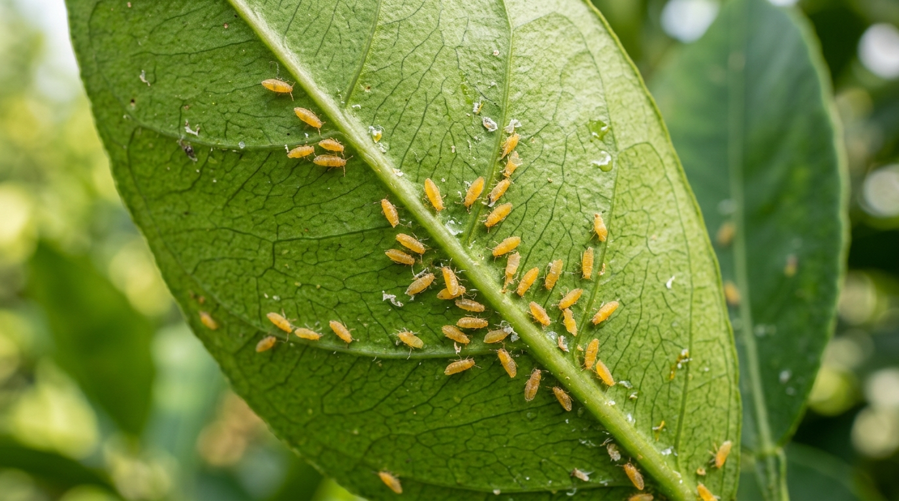

Healthy (Spray Skipped • 0ml)
Infected (Spot-Sprayed • 45ml)
Tractor Active Index
INSPECTING:
BLK_B_R04_T012
HEALTH INDEX:
Infected (Gummosis)
DOSE:
45 mL Delivered

Phytophthora: 94.4%

Psylla Nymphs: 89.2%
VALVE: CLOSED
Healthy Canopy • Zero Chemical Wasted
CHEMICAL TANK: 300L CAPACITY
264L (88% FULL)
TARGET DOSE: 45 mL
BURST TIME: 1.50s
PRESSURE: 4.2 BAR
🚨 संत्रा बाग तातडीची सूचना (CITRUS-TERRA)
📍 झाड आयडी: BLK_B_R04_T012 (काटोल, नागपूर)
🔬 आढळलेला रोग: फायटोप्thoरा डिंक्या (Phytophthora Gummosis) - ९४% खात्री.
⚡ कृती: १.५ सेकंद अचूक स्पॉट-फवारणी पूर्ण (४५ मि.ली. डोस).
💊 ICAR-CCRI नागपूर प्रमाणित उपाय:
१. खोडावरील डिंक खरवडून त्यावर १% बोर्डो पेस्ट (Bordeaux) लावा.
२. मुळांजवळ कॉपर ऑक्सिक्लोराईड (२.५ ग्रॅम/लिटर) आळवणी करा.
🌿 रासायनिक औषध बचत: ७२.४%!
Scans 0–40 cm bark collar for Phytophthora water-soaked lesions, bark cracking, and amber gum exudation.
Angled at +30° with diffuse LED illuminator to capture Asian Citrus Psylla (Diaphorina citri) nymphs and honeydew.
| Agronomic Parameter | Aerial Drone Approach (UAV) | CITRUS-TERRA Tractor Rig | Agronomic Verdict |
|---|---|---|---|
| Under-Leaf Sucking Pests (Psylla, Whitefly) | ❌ 100% Blind (Top-down aerial angle cannot image leaf undersides) | ✅ Upper +30° camera captures high-res under-leaf macro images | TRACTOR WINS |
| Trunk Collar Gummosis (Phytophthora) | ❌ 100% Blocked by dense 3D canopy from above | ✅ Lower -15° camera scans 0–40 cm bark collar directly at 60 FPS | TRACTOR WINS |
| Spatial Tree Indexing in 5m Grid | ❌ Fails (Commercial GPS ±3–5m drift confuses adjacent trees) | ✅ Wheel encoder + optical trunk sensor = Zero indexing drift | TRACTOR WINS |
| Extreme Vidarbha 45°C Heat Tolerance | ❌ LiPo drone batteries overheat & swell above 42°C ambient | ✅ Automotive electronics operate reliably up to 48°C | TRACTOR WINS |
| Hardware Capital Cost (CapEx) | ❌ ₹8,00,000 to ₹12,00,000 (Requires licensed pilot) | ✅ Under ₹35,000 (Mounts onto existing tractor/power-tiller) | 96% COST CUT |
| Targeted Spot-Spraying Efficacy | ❌ Aerial drift blown away by wind; poor under-canopy penetration | ✅ Targeted 1.5s pulsed solenoid bursts directly into the infected branch | >65% SAVINGS |
Orchard Operational Parameters
• Standard blanket spray: ₹1,800/acre/cycle in chemicals.
• CITRUS-TERRA targeted spot-spray: ₹500/acre/cycle.
• FPO Custom Hiring Service Fee: ₹250/acre/cycle.
• CITRUS-TERRA targeted spot-spray: ₹500/acre/cycle.
• FPO Custom Hiring Service Fee: ₹250/acre/cycle.